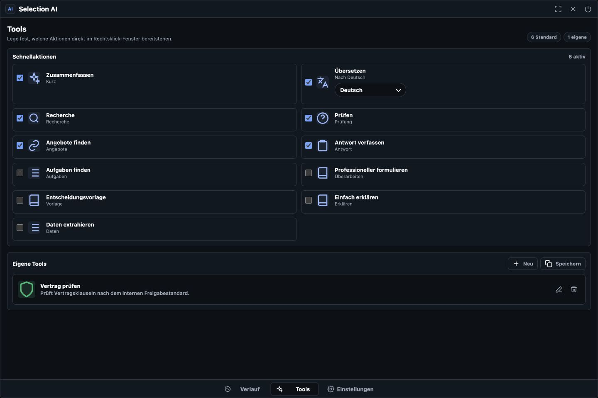

Text und Screenshots
Markierte Inhalte und frei zugeschnittene Bildschirmbereiche mit denselben KI-Funktionen verarbeiten.
Beta für macOS und Windows
KI direkt dort, wo du arbeitest.
Text markieren, Rechtsklick machen und sofort zusammenfassen, übersetzen, recherchieren oder dein eigenes Unternehmens-Tool ausführen. Ohne Kopieren in ein separates Chatfenster.
Im Arbeitsfluss
Selection AI ergänzt das normale Kontextmenü um die Aktionen, die du tatsächlich brauchst. Der ausgewählte Inhalt bleibt sichtbar und das Ergebnis ist sofort bereit zum Kopieren oder Einfügen.
Funktionen
Selection AI verbindet schnelle Aktionen mit einem vollständigen Arbeitsbereich für Chats, Projekte und individuell definierte Werkzeuge.
Markierte Inhalte und frei zugeschnittene Bildschirmbereiche mit denselben KI-Funktionen verarbeiten.
Informationen und Angebote im Web prüfen und Ergebnisse mit anklickbaren Quellen erhalten.
Prompts, Namen, Beschreibungen, Icons und Farben passend zu den Abläufen deines Unternehmens festlegen.
Arbeitsbereich
Alle Ergebnisse bleiben organisiert und lassen sich auf jedem angemeldeten Gerät weiterverwenden.

Unterhaltungen anpinnen, umbenennen, archivieren und thematisch in Projekten ordnen.

Schnellaktionen auswählen und wiederkehrende Unternehmens-Prompts dauerhaft hinterlegen.
Zentral und kontrollierbar
Verlauf, Projekte, Tools und Einstellungen werden mit dem Selection-AI-Konto synchronisiert. Nutzer benötigen keinen eigenen OpenAI-Schlüssel.
Starte mit bis zu 75 KI-Anfragen pro Monat. Die aktuelle Beta steht für macOS mit Apple Chip und Windows 10/11 bereit.